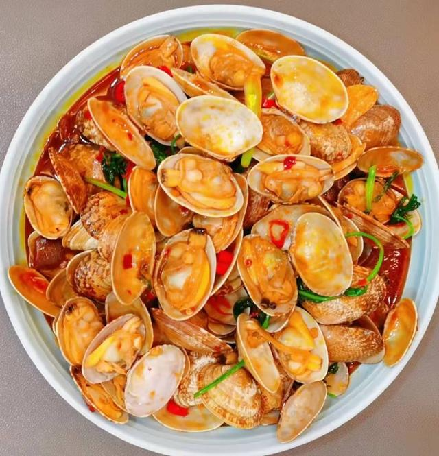
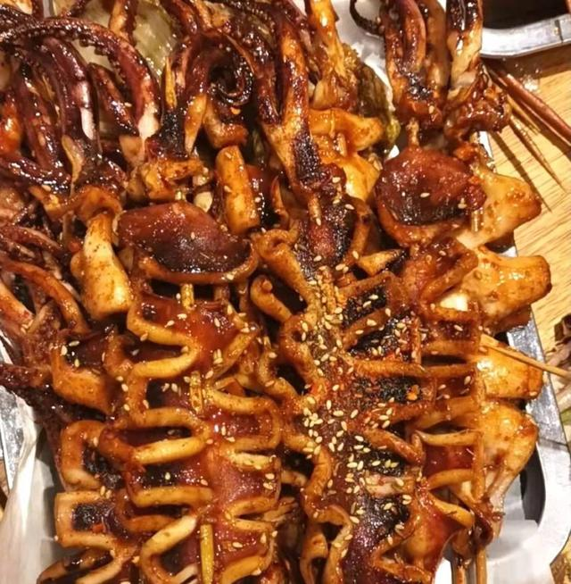
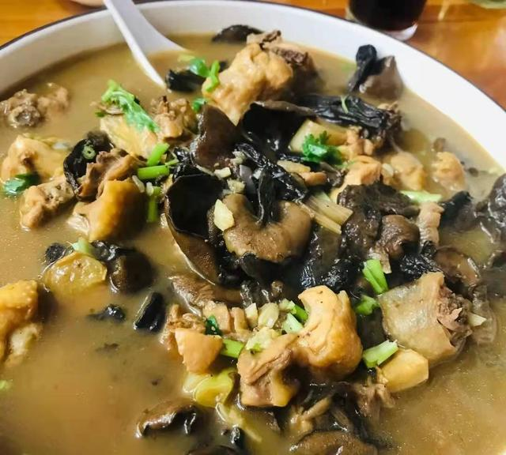
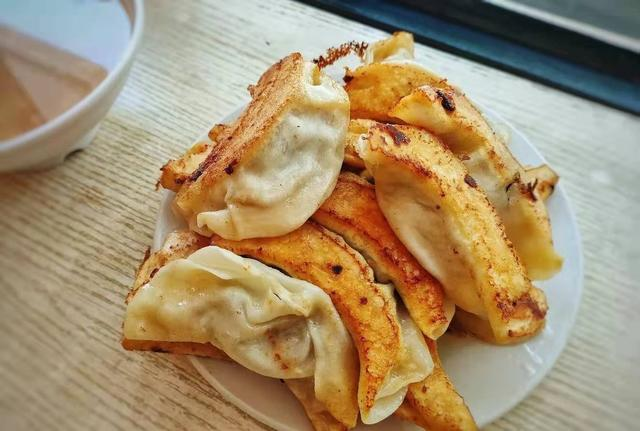

特色小吃

青岛大包
青岛大包是青岛十大特色小吃之一。因其皮薄、味美、鲜嫩而备受消费者的欢迎，先后被评为“山东省名小吃”、“中华名小吃”。

青岛凉粉
几乎是每个青岛原著人都会做的一道美食，在青岛叫做海菜凉粉。

袋装啤酒
袋装啤酒就是大家所说的——扎啤，这又是青岛最大得特色

鲅鱼水饺
青岛人对鲅鱼有一种特殊的偏爱，在青岛有句话叫做“鲅鱼跳，丈人笑”

辣炒蛤蜊
在青岛蛤蜊的美味绝对是世人皆知的，是每个青岛人每顿都少不了的美味

烤鱿鱼
肥美硕大的新鲜鱿鱼在铁板上滋滋作响香味四溢，加上辣酱等各种香料提香，光是哪个香味，就能让你无法挪步。

崂山菇炖鸡
崂山炖鸡是青岛著名的一道菜，肉质鲜嫩，崂山菇滑爽，味鲜汤浓

青岛锅贴
锅贴底部呈现深黄色，陷味鲜美，面皮软韧酥脆一盘锅贴20多个，一个人都吃到撂倒